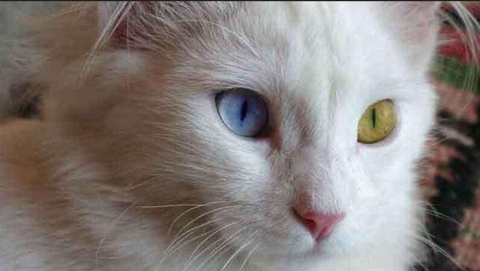
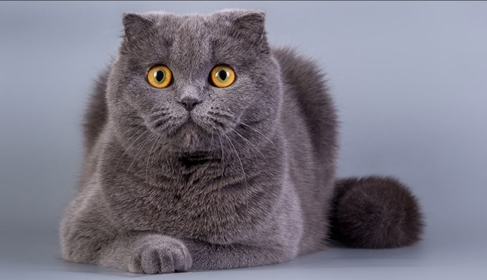

Büyük Britanya kökenli olan bu kedi ırkı, güçlü yapısı ve yumuşak tüyleri ile bilinir. Sakin, sadık ve çocuklarla arası iyi olan bir ırktır. Bakımı kolaydır ve apartman yaşamına çok uygundur.

Türkiye'nin Van Gölü çevresine özgü bir kedi ırkıdır. Genellikle bir gözü mavi, diğer gözü kehribar rengindedir. Suyu seven ender kedi türlerinden biridir ve çok iyi yüzücüdür.

İskoçya kökenli bu kedilerin en belirgin özelliği öne ve aşağı doğru kıvrık kulaklarıdır. Oldukça zeki, uysal ve insan canlısıdırlar. Sessiz bir yapıları vardır.

Tekir bir ırk değil, bir kürk desenidir ancak ülkemizde en yaygın görülen kedi türüdür. Genetik çeşitlilikleri sayesinde çok sağlıklı, zeki ve avcı yetenekleri gelişmiş kedilerdir.